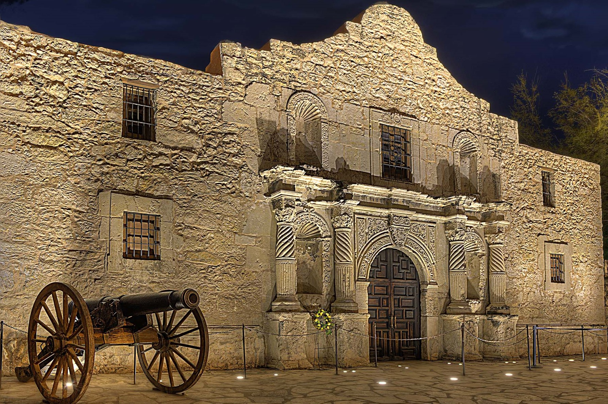

San Antonio

Location
San Antonio is the County Seat of Bexar County, Texas. It is located in the South Texas Plains region of south central Texas and is classified as an urban area. The city was originally founded on May 1, 1718 by Spanish settlers. It was incorporated into the Republic of Texas in 1837.
Attractions
San Antonio's most famous landmark, the Alamo, has a rich history. It was built over three-hundred years ago as a Spanish mission, originally named Mission San Antonio de Valero. In 1836, the Alamo was the site of a pivotal battle in the Texas Revolution.
The city is also home to the San Antonio Riverwalk , an approximately 2.5-mile stretch of the San Antonio river that runs through the downtown area of the city. The Riverwalk is lined with hotels, shops, and museums.